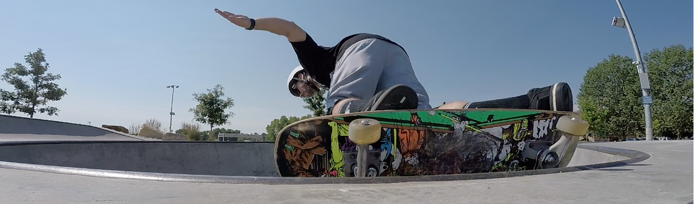

Can you trust a skater?
3/27/25 Owen Moore


Skaters are stoners who destroy public property and are rude to others. But there are reasons people say that. I feel that people see skaters as stoners because people are always smoking at the skateparks, but a lot of the time it's not even skaters, it's just people passing by who want to look cool and fit in. Since people always think skaters are those things that they notice, people have never noticed the nice skaters who help the community and are nice to everyone. Usually, people just remember the bad and disruptive ones and that leaves a longing impact on them.
Why do skaters do the activities they do?
A lot of people complain about skaters not staying in the skatepark or not staying off the streets, but in the skate world it's more respected and impressive to do tricks on the streets. It's almost like the skatepark is where skaters practice and the streets are where they play their games. I think it would also be very beneficial if the surrounding towns all had skateparks. Skating is one of the last sports remaining that has so much freedom left. Skaters take everyday objects and make them into unique objects that make for amazing tricks. Skateboarding is one big rebellion. Using stair sets and ledges and bumps on sidewalks to perform tricks.
Overall
I think if people think skateboarding is a problem they could fix up some of the parks that are around the area and build some parks within the major towns and cities around us. Maybe as well as promoting these parks and skateboarding as a more welcoming activity for younger kids.


{kind=link}
{kind=link}
{kind=link}